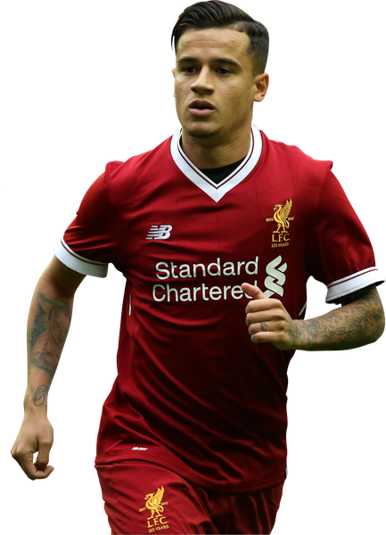
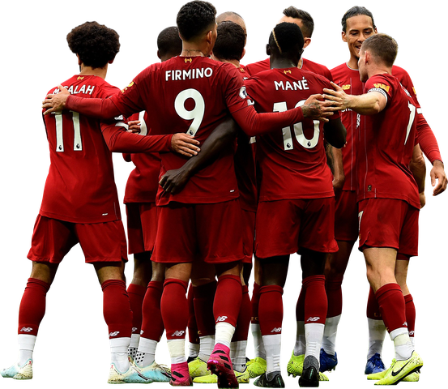

È la stagione in cui il Liverpool torna tra le grandi d'Europa. In Premier League arriva quarto con 75 punti, ma è in Champions League che il tridente Salah-Mané-Firmino fa la differenza: dopo aver eliminato Manchester City e Roma, i Reds raggiungono la finale di Kiev, persa 3-1 contro il Real Madrid tra l'infortunio di Salah e gli errori del portiere Karius.
Mercato: arriva Mohamed Salah dalla Roma per 42 milioni, che chiude con 44 gol stagionali, 32 dei quali in Premier League (allora un record); a gennaio si aggiunge Virgil van Dijk per circa 84 milioni. Parte invece Philippe Coutinho, ceduto al Barcellona per oltre 135 milioni.

Champions League
Finalista

Supercoppa UEFA
Non partecipante

Mondiale per Club
Non partecipante

Premier League
4º posto

FA Cup
Sedicesimi (4T)

Carabao Cup
Sedicesimi (3T)

Community Shield
Non partecipante
Sito realizzato per l'esame di Reti di Calcolatori e Principi di Cybersecurity - Università di Trieste
Foto della Champions League e della FA Cup: Wikimedia Commons.
Marco Barsoum -